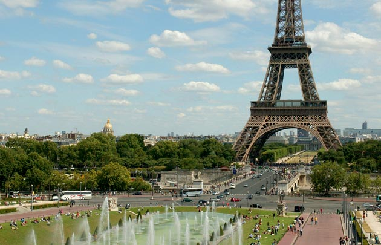
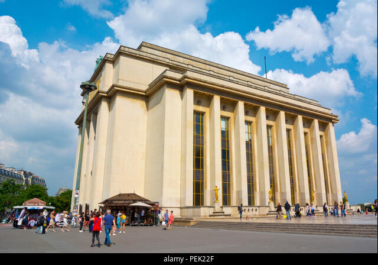

Presentation
Ce jardin fut créé pour l’exposition spécialisée de 1937 sur l’emplacement du précédent jardin du palais du Trocadéro réalisé par Jean-Charles Alphand pour l’exposition universelle de 1878. Il est bordé par le palais du Trocadéro.
Photos d'histoire
Les jardins restructurés au milieu des années 30 gardent le style empire, qui rassemble des cascades, ponts, rochers et des zones entre deux guerres comme la fontaine du Trocadéro appelée fontaine de Varsovie, des bassins et des sculptures en bronze doré et de pierre, sans oublier les immenses espaces de verdure.
Voici un aperçu de ces archives historiques :
De nos jours
Les architectes qui ont contribué à l’aménagement des espaces des jardins du Trocadéro, on site Roger-Henri Exper pour s’y rendre à ces jardins on passe par l’avenue des Nations- Unies qui coupes ce lieu deux fois deux passages souterrains permettent de franchir cette avenue. Pendant les périodes chaudes en été, les parisiens et les touristes se rafraîchissent souvent dans les bassins et les allés qui les logent servent souvent pour faire du sport.
